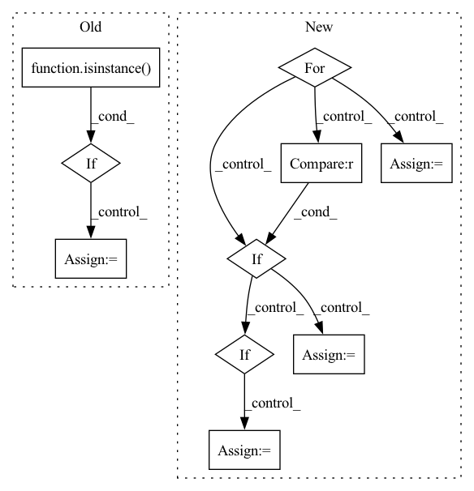

Pattern ID :19727
Before Change
super().__init__(**kwargs)
def attack(self, epoch: int, save=False, get_data=None, loss_fn="self", **kwargs):
if isinstance( get_data, str) and get_data == "self":
get_data = self.get_data
if isinstance(loss_fn, str) and loss_fn == "self":
loss_fn = self.loss_fn
self.model._train(epoch, save=save,After Change
correct = 0
total = 0
total_iter = 0
for data in self.dataset.loader["test"]:
if total >= 100:
break
_input, _label = self.model.remove_misclassify(data)
if len(_label) == 0 :
continue
self.model.load()
adv_input, _iter = self._train(**kwargs)
_, target_acc, clean_acc = self.validate_func()
total += 1
if _iter:
correct += 1
total_iter += _iter
print(f"{correct} / {total}")
print("current iter: ", _iter)In pattern: SUPERPATTERN
Frequency: 3
Non-data size: 10
Instances Fragment ID: 64390485
Project Name: ain-soph/trojanzoo
Commit Name: f4b89b747a81adcf7c9ccaaf4d9f02726c0483fa
Time: 2020-08-15
Author: ain-soph@live.com
File Name: trojanzoo/attack/poison/basic.py
M Class Name: Poison_Basic
N Class Name: Poison_Basic
M Method Name: attack(1)
N Method Name: attack(5)
M Parent Class: Attack
N Parent Class: Attack
M File Name: trojanzoo/attack/poison/basic.py
N File Name: trojanzoo/attack/poison/basic.py
M Start Line: 20
M End Line: 27
N Start Line: 26
N End Line: 53
Before Change
if loss_fn is None and self.loss_fn is None:
if target is None:
target = self.generate_target(_input, idx=target_idx)
elif isinstance( target, int) :
target = target * torch.ones(len(_input), dtype=torch.long, device=_input.device)
def _loss_fn(_X: torch.Tensor, **kwargs):
t = targetAfter Change
correct = 0
total = 0
total_iter = 0
for i, data in enumerate(self.dataset.loader["test"]):
if total >= 100:
break
_input, _label = self.model.remove_misclassify(data)
if len(_label) == 0 :
continue
adv_input, _iter = self.craft_example(_input)
total += 1
if _iter:
correct += 1
total_iter += _iter
print("{} / {}".format(correct, total))
print("current iter: ", _iter) Fragment ID: 64390609
Project Name: ain-soph/trojanzoo
Commit Name: 5afae72db24844f2ecd29293bee298401d857ba4
Time: 2020-07-01
Author: ain-soph@live.com
File Name: trojanzoo/attack/adv/pgd.py
M Class Name: PGD
N Class Name: PGD
M Method Name: attack(1)
N Method Name: attack(5)
M Parent Class: PGD_Optimizer,Attack
N Parent Class: PGD_Optimizer,Attack
M File Name: trojanzoo/attack/adv/pgd.py
N File Name: trojanzoo/attack/adv/pgd.py
M Start Line: 28
M End Line: 47
N Start Line: 28
N End Line: 53
Before Change
def attack(self, epoch: int, save=False, get_data=None, loss_fn="self", **kwargs):
if isinstance(get_data, str) and get_data == "self":
get_data = self.get_data
if isinstance( loss_fn, str) and loss_fn == "self":
loss_fn = self.loss_fn
self.model._train(epoch, save=save,
validate_func=self.validate_func, get_data=get_data, loss_fn=loss_fn,
save_fn=self.save, **kwargs)After Change
correct = 0
total = 0
total_iter = 0
for data in self.dataset.loader["test"]:
if total >= 100:
break
_input, _label = self.model.remove_misclassify(data)
if len(_label) == 0 :
continue
self.model.load()
adv_input, _iter = self._train(**kwargs)
_, target_acc, clean_acc = self.validate_func()
total += 1
if _iter:
correct += 1
total_iter += _iter
print(f"{correct} / {total}")
print("current iter: ", _iter) Fragment ID: 64390737
Project Name: ain-soph/trojanzoo
Commit Name: f4b89b747a81adcf7c9ccaaf4d9f02726c0483fa
Time: 2020-08-15
Author: ain-soph@live.com
File Name: trojanzoo/attack/poison/basic.py
M Class Name: Poison_Basic
N Class Name: Poison_Basic
M Method Name: attack(1)
N Method Name: attack(5)
M Parent Class: Attack
N Parent Class: Attack
M File Name: trojanzoo/attack/poison/basic.py
N File Name: trojanzoo/attack/poison/basic.py
M Start Line: 20
M End Line: 27
N Start Line: 26
N End Line: 53
Before Change
name: save figure as <name>.png
all_activations = []
if isinstance( labels, str) :
activations = pd.read_csv(f"{model_dir}{directory}/{labels}_activations.csv")
// Reference for row to label
label_handle = [labels] * len(activations)
else:
// Accumulate activations & label handle
activations = []After Change
label_handle = []
file_paths = []
for label in labels:
// Get all metadata for label
if kind == "upsampled" :
class_meta_filename = f"{annotations_dir}classes/upsampled/{label}.csv"
elif = f"{annotations_dir}classes/{label}.csv"
df_class = pd.read_csv(class_meta_filename).reset_index(drop=True)
// Activations
temp = pd.read_csv(f"{model_dir}{directory}/{kind}/{label}_activations.csv")
num_null = temp.isna().any(axis=1).sum()
if num_null > 0 and len(temp) == len(df_class):
print(f"{label} contains {num_null} null values!")
// Filter out NAs Fragment ID: 64390572
Project Name: stan-hua/cytoimagenet
Commit Name: 1ab297e870800b585b527efea61b1dad69bc8ee4
Time: 2021-08-03
Author: stanley.hua@mail.utoronto.ca
File Name: scripts/visualize_classes.py
M Class Name: AnonimousClass
N Class Name: AnonimousClass
M Method Name: create_umap(3)
N Method Name: create_umap(2)
M Parent Class:
N Parent Class:
M File Name: scripts/visualize_classes.py
N File Name: scripts/visualize_classes.py
M Start Line: 142
M End Line: 160
N Start Line: 142
N End Line: 192